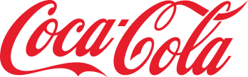

Logo Design
Tvorba loga je na grafickém designu pravděpodobně nejtěžší. Když se podíváme na některé loga, tak můžeme vidět symboly, znaky a různé další elementy. Vytvoření dobrého loga není vůbec snadné. V této části se podíváme na hlavní charakteristiky, které dělají silná loga úspěšné.
Charakteristika silného loga
Silné logo designy mají pár charakteristik, které je dělají úspěšné. Na některé z nich se podíváme.
Vyváženost mezi symboly, znaky a elementy
Silná loga mají dobrou vyváženost mezi symboly, znaky a elementy. Neznamená to ale že všechna loga potřebují znaky nebo symboly. Některá loga jsou třeba jen typografické elementy.
Rozpoznatelnost použitím jen části loga
Silná loga jsou rozpoznatelná použitím jen jejich části.
Nezávislost na barvě
Silná loga nepotřebují barvu k tomu aby byla efektivní. Barva je v logo designu kritická, ale logo na ní nemusí být závislé.
Dobrá použitelnost na širokou škálu aplikací
Logo by mělo být flexibilní a dynamické. Mělo by se například dát použít i na menší rozměry a být stále rozpoznatelné. Dále by se mělo dát rozpoznat třeba i z větší dálky.
Obstání ve zkoušce času
Logo by mělo obstát ve zkoušce času.
Vyhýbání se populárním trendům
Při designu loga je dobré se vyhnout populárním trendům. Dříve byl například populární lesklý design, který byl použit i na některá loga. Později ale přišel flat design, který vše zjednodušil a lesklý design přestal být moderní. Hodně log kvůli tomu muselo být předěláno.
Používání negative space pro vlastní prospěch
Pojem negative space je v umění prázdný prostor mezi objekty nebo kolem nich. Tento prázdný prostor může v logu vytvářet další tvar. Když se podíváte na následující FedEx logo, tak znaky E a X tvoří šipku, která na první pohled není vidět. Jakmile ji ale jednou uvidíme, budeme ji tam vidět pořád.
Rezonování s cílovou skupinou společnosti
Logo by mělo rezonovat s cílovou skupinou společnosti. Když se společnost Gap v roce 2010 rozhodla dát svému logu modernější vzhled, dost lidem se to nelíbilo. Proto si nakonec nechali staré logo.
Dobrá čitelnost
Pokud v logu použijeme script font, tak bychom měli zajistit aby se dal snadno přečíst. Některé script fonty totiž mohou jít hůře přečíst. Pokud logo vytváříme, tak se nám nemusí zdát že něco jde špatně přečíst, pokud jej ale někdo uvidí poprvé, tak s tím může mít problém.
Unikátnost
Když vytváříme logo, tak nechceme aby vypadalo jako jiná loga. Logo by mělo být unikátní jako samotná společnost, které logo patří.
Jak začít s tvorbou loga
Tvorbu loga je dobré začít sketchováním. Stačí nám jen papír a tužka, případně grafický tablet. Sketchování je o tom že přicházíme s nápady a jen tak si je načrtáváme na papír. Nemusí to vypadat hezky, je to jen náčrt. Chceme si jen ujasnit jak by mělo logo vypadat. Pokud se pustíme do tvorby bez žádné představy o tom jak by logo mělo vypadat, tak pro nás jeho tvorba může být o dost těžší. Záleží ale také na tom jak složité logo děláme. Pokud chceme v logu třeba jen tři písmena, tak samozřejmě sketchování můžeme vynechat.